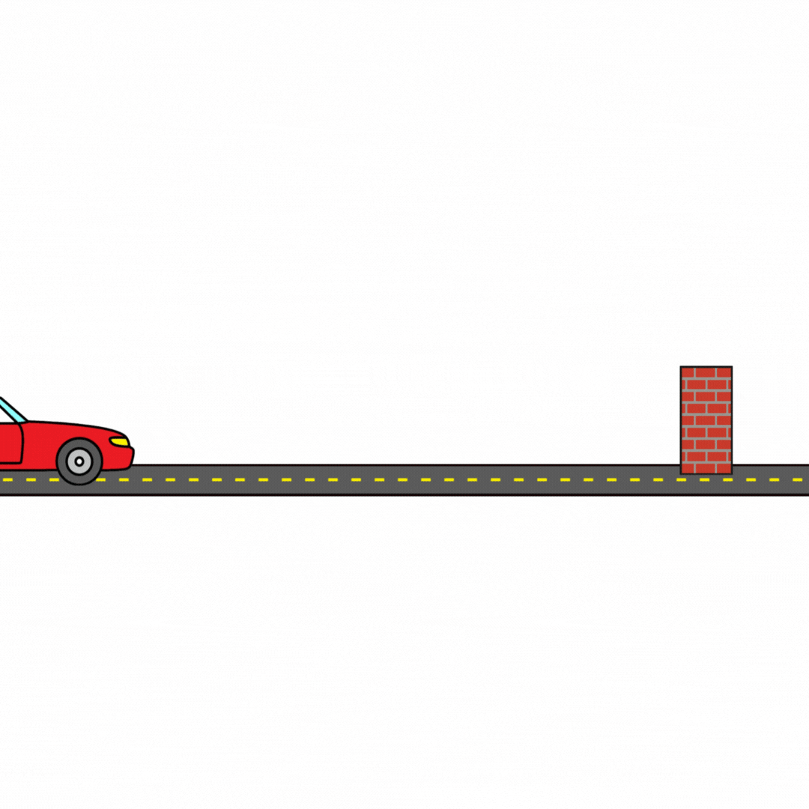

A inércia é a tendência que todos os corpos possuem de manter o seu estado atual. Se estiver parado, permanece parado. Se estiver em movimento, permanece em movimento retílineo uniforme, desde que nenhuma força atue sobre ele.
Exemplo: Quando um carro freia de repente, o corpo das pessoas tende a continuar indo para frente. Isso ocorre por causa da inércia.
Na antiguidade, Aristóteles acreditava que um objeto em movimento só continuava se uma força estivesse atuando sobre ele o tempo todo. Durante a Idade Média, Jean Buridan propôs a teoria do “ímpeto”, afirmando que o movimento continuava porque o objeto tinha recebido um impulso. Galileu foi o primeiro a sugerir que, sem atrito, um corpo em movimento continuaria para sempre. Descartes aperfeiçoou a ideia dizendo que o movimento tende a ser conservado. Por fim, Newton reuniu todo o conhecimento e formulou o conceito moderno da inércia:
“Todo corpo permanece em seu estado de repouso ou de movimento retilíneo uniforme, a menos que seja obrigado a mudar esse estado por forças aplicadas sobre ele.” — Isaac Newton